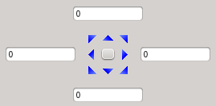
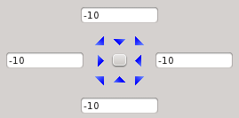
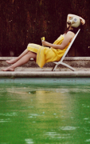
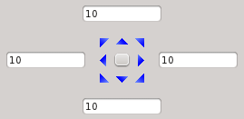
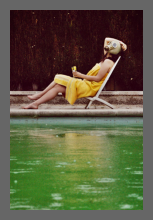
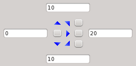
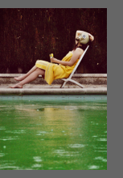
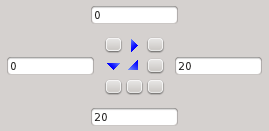
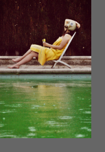

Adds or removes image margins. [more]
Categories: Geometry
Keywords: cropping, margins, canvas, image resolution
[hide]
[hide]
Crop is a basic geometrical tool to change the dimensions of a target image by adding or removing margins of user-defined lengths. Crop is a versatile tool that allows working either with absolute dimensions in pixels, centimeters or inches, or with relative dimensions. It can create margins filled with a user-defined color and opacity, remove rows and columns of pixels, or modify the printing resolution of the target image.
[hide]
The first element in the Crop interface is a view selector, which can be used to copy geometric properties from an image to the Dimensions section of the interface. Selecting a view is optional and has no effect at all on the selected view. Changes can be applied to the active view by clicking the Apply button (or by pressing F5), or by direct application of an instance of the process to a view, as part of the usual procedures to execute a process in PixInsight.
Figure 1
The left picture above shows the default Dimensions section. In the right image the Dimensions section has acquired the geometric properties of the image specified by the view selector. Note the disabled Original px Width and Heigth edit boxes. When a view is selected, both fields are no longer modifiable since the Original px dimensions correspond to those of the selected view.
This section allows creating or removing margins in an image with four edit boxes and an arrow pad. The extent of each of the four margins in pixels is specified by its corresponding edit box. When an edit box has a positive value, the specified margin in pixels will be added at the corresponding side of the target image. In this case the newly created rows or columns of pixels will be filled with the color and opacity specified in the Fill Color section. Specifying a negative margin in an edit box removes it from the corresponding side. The values expressed in the four edit boxes can have different meanings, depending on the selected Process Mode.
The user can easily redistribute the total margin lengths by clicking one of the nine arrow pad buttons. The table below exemplifies the use of the edit boxes and the arrow pad in the Absolute margins in pixels process mode.
|
Arrow Pad |
Image Sample |
Image Dimensions |
Description |
|---|---|---|---|
|  | 133x200 |
Original image without margins and default arrow pad. |
|
|  |  | 113x180 |
A margin of 10 pixels has been removed from each side of the original picture. |
|  |  | 153x220 |
A margin of 10 pixels (see the Fill Color section) has been added to each side of the original picture. |
|  |  | 153x220 |
The image has no margin at its left side and a 20 pixels margin at its right side. This is the result of specifying a margin of 10 pixels for each edit box, then clicking on the center-left arrow. |
|  |  | 153x220 |
The image has no margins at its top and left sides, but it has a 20 pixels margin at its right and bottom sides. This is the result of specifying a margin of 10 pixels for each edit box, then clicking the top left corner arrow button. |
In this section you can specify the new dimensions of the target image directly by specifying a new width and height, either in pixels, as a percentage of the original picture, in centimeters, or in inches. The cm and inch fields depend on the resolution of the image, which can be changed in the Resolution section. The text area below the edit fields provides information on the dimensions of the resulting image. The final dimensions are calculated from the current dimensions in Original px. When no view is selected in the view selector, a default 32-bit format is considered for dimensions calculation.
Special attention must be paid to understand that this tool performs a redimensioning of the target image by adding or removing margins, and not by resizing or rescaling the original image (for this purpose refer to the Resample tool). As a result, the Crop tool performs no interpolation of pixel values.
When new margins are created in the target image, they will be filled with a user-specified color and opacity (see the Fill Color section).
When new dimensions (different from the Original px dimensions) are specified in this section, new values appear automatically on the four edit boxes of the Margins/Anchors section. These values correspond to the positive or negative margins to be applied in order to achieve the specified dimensions for the target image. By default, the positive or negative margins are referred to the center of the image, but this behavior can be changed either by modifying the edit boxes directly, or by clicking the nine buttons on the arrow pad.
The resolution of an image is used to specify its final dimensions, in inches or centimeters, when the image is to be printed. The resolution is relevant when the image is imported in a page layout application, such as a word processor or a desktop edition application. It is important to point out that changing the resolution of an image does not change its dimensions in pixels. It is just the dimensions of a printed pixel what image resolution specifies. A default resolution of 72x72 pixels/inch is predefined.
Horizontal and Vertical
The user can specify the horizontal and vertical resolution either in centimeters or inches. The physical width and heigth of the pinted image depend on the resolution and the dimensions in pixels; for instance, a 1000x1000 pixels image with a resolution of 100 pixels per inch in both axes would be printed over a square of 10x10 inches.
Force resolution
When this checkbox is checked the resolution of the target image is effectively modified when the process is executed. Otherwise, when this chekbox is unchecked, resolution values are used for informative purposes exclusively, but they won't change the current resolution of the target image. In both cases, the specified horizontal and vertical resolutions are used to calculate the cm and inch fields of the Dimensions section.
This section allows specifying the working mode of the Margins/Anchors section.
Relative margins
When this mode is selected, the margin values are expressed as relative values, where the unity on each axis corresponds to the original dimension of the target image. For instance, a value of 0.2 in the left side edit box will add a left margin of the 20% of the Original px Width field.
Absolute margins in pixels
In this mode, the values of the Margins/Anchors section are expressed in pixels. This is the default mode.
Absolute margins in centimeters
The values of the Margins/Anchors section are expressed in centimeters.
Absolute margins in inches
The values of the Margins/Anchors section are expressed in inches.
In this section you can define the color and opacity of newly created margins (when positive margins are specified) by adjusting three sliders corresponding to the individual RGB channels plus one corresponding to the alpha channel. A color sample area below the sliders shows the custom color and opacity.
Copyright © 2011 Pleiades Astrophoto. All Rights Reserved.